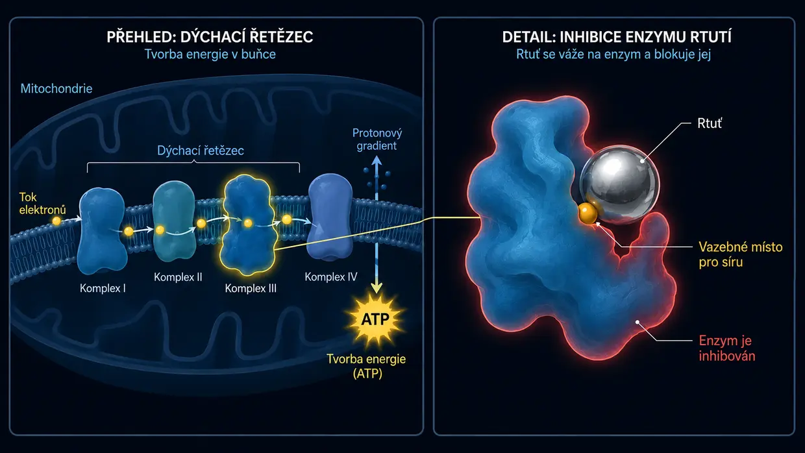

Tinnitus způsobený léky a toxiny (ototoxicita)
Naposledy aktualizováno: červen 2026
I já jsem tehdy trpěl extrémním, pekelným tinnitem. U mě byl tehdy sice hlavním spouštěčem klasický tinnitus způsobený hlukem (a nikoli akutní příhoda související s lékem), ale nepřetržitý zvuk představoval úplně stejný trvalý útok na mé nervy, můj spánek a celý můj život. Také mně lékaři často říkali, že se s tím prostě musím naučit žít.
Tento článek o chemických spouštěčích píšu proto, že toto téma hrálo v mé vlastní rešerši důležitou roli. Od roku 2012 jsem se intenzivně zabýval buněčnou biochemií – také oblastí toxikologie a environmentální medicíny. A právě tady se kruh uzavírá: U lékařů environmentální medicíny (například Dr. Klinghardta nebo Dr. Muttera) lze totiž v praxi často pozorovat fascinující jev. Pokud je u pacientů s tinnitem skrytá zátěž toxiny nebo těžkými kovy významným faktorem, může cílená buněčná detoxikace často vést k výraznému nebo znatelnému zmírnění ušních šelestů. Sdílím zde vlastní stav poznání z této rešerše – a základ pro přístupy k řešení, kterým se na základě těchto rešerší budeme později na tomto webu věnovat.
Chemický útok zevnitř
Když pomyslíme na tinnitus, většinou se nám okamžitě vybaví dva obrazy: burácející koncert (hluk) nebo masivní stres, respektive vnitřní traumatický stres (psychosomatika). Existuje však ještě třetí spouštěč, který není ani mechanický, ani emocionální, nýbrž čistě chemický: tinnitus způsobený léky nebo toxiny. Podle mého názoru patří tento druh tinnitu k těm nejméně zastoupeným – pro úplnost však chci popsat svůj pohled i na tento třetí spouštěč. Odborně se tomu říká ototoxicita (v překladu „toxicita pro ucho“).
Zpočátku to možná zní abstraktně, ale naše vnitřní ucho je vůči určitým chemickým látkám mimořádně citlivé. Některé léky nebo environmentální toxiny se mohou krevním oběhem dostat přímo do vnitřního ucha a tam podráždit, nebo dokonce poškodit citlivé vláskové buňky či sluchový nerv.
Mechanismus: Jak chemie vytváří tóny
Vzpomeňme si na iontový kanál na špičce vlásku, který po přetížení zůstává trvale příliš otevřený a už se správně nezavírá – jak jsem již vysvětlil na své podstránce o tinnitu způsobeném hlukem. Při hlukovém traumatu mění mechanická síla zvukových vln geometrickou polohu jemných smyslových vlásků.
Při tinnitu způsobeném léky nebo toxiny se nakonec často děje něco velmi podobného, jen cesta k tomu je jiná. Každou jednotlivou vláskovou buňku v uchu si v zásadě musíme představit jako malou biologickou baterii. Udržuje mimořádně jemnou rovnováhu energie (ATP), minerálů a elektrického napětí.
Environmentální toxiny nebo toxické dávky léků mohou tuto jemnou rovnováhu narušit tím, že výrazně omezí funkci buněčných elektráren – odborně mitochondrií. Na buněčné úrovni se pak podle mého chápání biochemie děje následující:
Protože jsou mitochondrie pro zásobování buňky energií nepostradatelné, hladina energie v buňce – tedy hladina ATP – následně klesá. Drobné pumpy v buněčné stěně, které při své práci nepřetržitě spotřebovávají ATP, tedy buněčnou energii, pak jednoduše nestíhají dostatečně rychle udržovat chemickou rovnováhu. V důsledku toho se uvnitř buňky hromadí vápník. Protože je vápník v biologii přímým spouštěčem přenosu vzruchu, nutí tento nadbytek iontů buňku k trvalému a nekontrolovanému vysílání „chybných signálů“. Pro mě to není žádná mystická náhoda, nýbrž logický biochemický automatismus. Mozek tuto nepřetržitou elektrickou palbu vnímá jako zvuk.
Jaký přesně tón přitom slyšíš – zda vysoké pískání, syčení nebo hluboké hučení –, většinou jednoduše závisí na tom, na kterém přesném místě v hlemýždi se postižené vláskové buňky nacházejí. Ucho v tomto okamžiku obvykle není fyzicky zničeno, ale jeho jemný vnitřní řád se vychýlí z rovnováhy.
Elektrické zkraty (sluchový nerv)
V ohrožení nejsou jen vláskové buňky, ale také samotný „elektrický kabel“ – sluchový nerv. Tento nerv je obalen ochrannou vrstvou zvanou myelin. Tato izolační vrstva je mimořádně bohatá na tuky a minerály, a proto reaguje obzvlášť citlivě na toxiny kolující v krvi. Když chemický stres tuto vrstvu oslabí nebo „ztenčí“, nerv již nevede signály čistě. Vznikají skutečné elektrické „zkraty“.
A právě zde se ukazuje čistá logika naší anatomie: Náš sluchový nerv není jednoduchý jediný drát, nýbrž silný svazek tisíců drobných nervových vláken. Každé jednotlivé z těchto vláken slouží k přenosu zcela určité výšky tónu. Pokud toxický zkrat (úbytek myelinu) vznikne právě na nervovém vláknu odpovědném za vysoké frekvence, tvůj mozek logicky zaznamená vysoké pískání. Je-li postiženo vlákno pro hluboké tóny, slyšíš hluboké hučení. Jaký šum, syčení nebo pískání tedy vnímáš, není vůbec náhoda – zásadně to závisí na tom, na kterém drobném místě hlavního kabelu byla poškozena izolace.
Univerzální zákon tinnitu
Když všechny tyto dílky skládačky spojíme, vykrystalizuje z nich jeden ústřední společný jmenovatel: Podle mého nejhlubšího přesvědčení a zkušenosti je tinnitus v konečném důsledku výsledkem chronicky podrážděných, nadměrně vzrušených nervů zpracovávajících sluch. Z fyzikálního hlediska je téměř jedno, kde přesně se spustí tato nadměrná stimulace:
- Ať už vláskové buňky (vlivem hluku nebo léků) uvíznou v nouzovém režimu a trvale zaplavují sluchový nerv glutamátem…
- Ať už environmentální toxiny a těžké kovy napadají izolaci (myelin) nervů a způsobují v ní přímé zkraty…
- Nebo se v mozku nahromadí masivní chronický psychosomatický stres a centra zpracovávající sluch uvede takříkajíc „shora“ pod trvalý proud…
Jakmile člověk tuto univerzální logiku pochopí, tinnitus často úplně ztratí svou mystickou hrůzu.
Konečný výsledek je podle mé zkušenosti nakonec téměř vždy úplně stejný: Nervový systém v této oblasti je chronicky podrážděný a vysílá nepřetržitou elektrickou palbu SOS. Jakmile člověk tuto univerzální logiku pochopí, tinnitus často úplně ztratí svou mystickou hrůzu – a cesta k řešení je náhle křišťálově jasná.
Typické spouštěče (ototoxické látky)
Ale dobře, pokračujme: Existuje celá řada látek, o nichž je známo, že mohou působit potenciálně ototoxicky. (Důležité: Nejde o lékařský seznam k samodiagnostice, slouží pouze k obecnému porozumění!)
1. Léky
Některé přípravky mohou vnitřní ucho nadměrně dráždit. Nestačí však znát jen jejich názvy – je třeba pochopit, proč mohou systém vyvést z rovnováhy. Teprve pochopení mechanismu poškození dává později popsanému přístupu (buněčná energie a detoxikace) vůbec smysl. K nejznámějším skupinám patří:
Vysoké dávky léků proti bolesti (zejména aspirin/ASA)
Na úvod pro uklidnění: Běžná tableta proti bolesti hlavy zpravidla ještě tinnitus nezpůsobí. Podle výzkumu zde často existuje striktní dávkový paradox. Nebezpečné to většinou začíná být až při skutečně toxických vysokých dávkách (často několik gramů denně). Pokud k tomu dojde, farmakologické modely naznačují, že lék spustí ve vnitřním uchu třístupňovou řetězovou reakci:
- Motor se zadrhává: Předpokládá se, že účinná látka blokuje prestin, drobný protein, který ve vnějších vláskových buňkách pracuje jako motor. Tím se zhroutí akustický zesilovač v uchu. Mozek v panické reakci často vytočí svůj centrální „regulátor hlasitosti“ (Central Gain) na maximum, aby vůbec ještě něco slyšel.
- Přecitlivělost nervů: Modely zároveň naznačují, že lék uvádí receptory na sluchovém nervu do stavu zvýšené dráždivosti. Práh podráždění klesá, takže nervový systém reaguje mnohem citlivěji už na ty nejmenší signály.
- Výpadek proudu (roznětka): Podle biochemického výzkumu působí aspirin ve vysokých dávkách jako „rozpojovač“ v mitochondriích. Obrazně řečeno vytáhne buňce zástrčku ze zásuvky (nedostatek ATP). A právě zde spočívá fascinující, logický rozdíl oproti hlukovému traumatu: Při hluku mechanická síla jemné buněčné vlásky doslova ohne. Vápníkový kanál pak zůstane jako zaseknuté dveře trvale otevřený a vápník proudí bez omezení dovnitř. Při předávkování aspirinem se to neděje. Vlásky stojí zcela neporušené na svém místě. Zde je to „jen“ chemie, která se vychýlila z rovnováhy. Dovnitř neproudí více vápníku než obvykle – ale kvůli prudkému poklesu energie drobné vápníkové pumpy buňky jednoduše nestíhají dostat ho zase ven. Buňka je v tomto okamžiku běžným množstvím vápníku zkrátka zcela přetížena. Konečný výsledek je stejný: Vápník se hromadí uvnitř a nutí buňku nepřetržitě uvolňovat přenašeč glutamát.
Možný výsledek v podobě tinnitu: Tato nekontrolovaná záplava glutamátu dopadá na nervy s již sníženým prahem podráždění (stupeň 2) a je vysílána do mozku, jehož regulátor hlasitosti je vytočený na doraz (stupeň 1). Vzniká ohlušující nepřetržitá palba. A právě tato jednoduchá buněčná logika vysvětluje i každodenní jev, pro který často nemá přesvědčivou odpověď ani mnoho lékařů: Proč má strýc, který týden masivně předávkovával aspirin, po jeho vysazení často už za krátkou dobu v uchu opět klid – zatímco jeho šestadvacetiletý synovec, který byl jen dvakrát na hlasité diskotéce, už čtyři měsíce trpí tinnitem, který jednoduše nemizí? Pro mě je odpověď naprosto jasná: U strýce šlo o biochemický výpadek proudu spojený s přecitlivělostí sluchového nervu. Jakmile se lék po dohodě s lékařem vysadí a tělo ho vyloučí, mohou buněčné elektrárny znovu pracovat ve svém normálním fyziologickém režimu. Pumpy tak opět získají potřebnou energii, mohou odstranit přebytečný vápník a systém může znovu fungovat bezchybně. U synovce z diskotéky naproti tomu došlo k hrubému mechanickému násilí. Podle mé rešerše a mého chápání jsou poté jeho jemné vlásky v pozměněné geometrické poloze: Některé jsou nakloněné více, jiné méně. I při nezměněném zásobování energií proto zůstávají iontové kanály trvale otevřené více, takže do buňky proudí více vápníku, než je fyziologicky určeno. Je to, jako by člověk hrubou silou ohnul pant dveří. A to se logicky samo neopraví během jediného víkendu jen proto, že hluk skončil – další informace najdeš na mé podstránce o tinnitu způsobeném hlukem.
Určitá antibiotika (aminoglykosidy)
Tato silná antibiotika se většinou používají pouze v nemocnici při závažných bakteriálních infekcích (například gentamicin). Mají mimořádně zákeřnou vlastnost: Často se cíleně hromadí v tekutině vnitřního ucha a odbourávají se z ní jen trýznivě pomalu – mohou tam zůstávat týdny nebo měsíce. Tam reagují se železem v těle a vyvolávají masivní explozi „volných radikálů“ (ROS). Je to jako biochemický plošný požár, který napadá citlivé buněčné membrány a vnitřní aktinovou kostru vlásků. Zde se uplatňuje jednoduchá biologická logika se dvěma výsledky:
- Výsledek 1 (smrt buňky): Pokud je tělo v tu chvíli už tak oslabené, má sotva nějaké zásoby živin nebo je předem poškozené, buňka se pod tímto chemickým plošným požárem úplně zhroutí a zemře (apoptóza). Paradoxní výsledek: V tomto případě většinou nevznikne tinnitus. Mrtvá buňka už nevysílá. Místo toho vznikne čistá, němá ztráta sluchu (hluchota) právě na této frekvenci.
- Výsledek 2 (boj o přežití = tinnitus): Buňka útok těsně přežije, zůstane však masivně strukturálně poškozená. V zásadě je to přesně jako hlukové trauma, jen čistě chemicky vyvolané. Pevná vnitřní kostra (aktin) se zhroutí, takže vlásky doslova vadnou jako květiny bez vody. Buňka ale stále žije! A protože žije, zoufale se snaží bojovat proti vápníku proudícímu dovnitř děravou membránou. Protože je tento tok iontů přímým chemickým povelem k přenosu vzruchu, je těžce poškozená buňka v trvalém panickém režimu nucena nepřetržitě pálit přenašeč glutamát na sluchový nerv. Z tohoto buněčného boje o přežití vzniká nepřetržitá elektrická palba – a právě tu vnímáš jako tinnitus.
Diuretika (silně účinné odvodňovací tablety)
Takzvaná kličková diuretika neodvádějí z těla jen vodu, ale masivně vyplavují také elektrolyty, jako je draslík a sodík. V čem je problém? Vnitřní ucho má vlastní malý zdroj napětí, stria vascularis. Tato vrstva tkáně nepřetržitě pumpuje draslík do ušní tekutiny, aby v ní udržovala konstantní elektrické napětí – je to baterie, z níž vláskové buňky čerpají proud pro slyšení. Odvodňovací tablety blokují právě tento biochemický mechanismus pumpy. Elektrické napětí v uchu pak prudce klesne. Biologická baterie je náhle „vybitá“ a sluchový systém se dostane do chaotického poplachového stavu, který se vybije jako šum nebo pískání.
Chemoterapeutika (například cisplatina)
Tyto agresivní léky proti rakovině často vycházejí z platiny (těžkého kovu). Jsou naprogramovány tak, aby zasahovaly do DNA buněk. Pokud však tento lék vyvolá dění spojené s tinnitem, je podle farmakologických modelů příčinou skutečný biochemický plošný požár ve vnitřním uchu: Cisplatina v takovém případě buňku zcela připraví o její nejdůležitější vlastní ochrannou látku (glutathion). Bez tohoto ochranného štítu volné radikály vyžírají do buněčné membrány mikroskopické díry a ničí iontové pumpy. Výsledkem je extrémní iontová nerovnováha: Vápník zaplaví buňku a nutí ji k nepřetržité palbě glutamátu. Cisplatina je zároveň silně neurotoxická a doslova rozkládá myelinovou vrstvu (izolaci) sluchového nervu. Když se pak nepřetržitá palba poškozené buňky střetne s nechráněným, obnaženým nervem, vznikají skutečné, měřitelné zkraty a chybné výboje přímo na hlavním kabelu do mozku. I zde platí biologické rozcestí tinnitu: Pokud je buňka úplně zničena (apoptóza), většinou nastane ticho (hluchota). Pokud přežije jako těžce poškozená troska s propustnými membránami a obnaženými nervy, často vysílá trvalý rušivý signál. To vysvětluje, proč bývá tinnitus po chemoterapii často mimořádně úporný.
Chinin (lék proti malárii a přípravky proti svalovým křečím)
Chinin má silný vazokonstrikční účinek. Vnitřní ucho je z anatomického hlediska naprostá slepá ulička – krev do něj přivádí jediná, nepatrná tepna (arteria labyrinthi). Neexistují tam žádné „objížďky“. Když chinin tuto drobnou tepnu zúží a zároveň sníží pružnost červených krvinek, průtok krve začne váznout. Vláskové buňky jsou pak odříznuty od naprosto nezbytného přísunu kyslíku a živin. Dostanou se do těžké dechové tísně a okamžitě přepnou do panického režimu tinnitu.
2. Těžké kovy a environmentální toxiny
Těžké kovy, jako je rtuť, olovo, hliník nebo také kadmium atd., působí na buněčné úrovni jako mimořádně agresivní sabotéři. Kdo se zabývá hloubkovými detoxikačními protokoly, ví: Buňky vnitřního ucha neotravují jen nespecificky, ale přesně se zapojují do biologických procesů a blokují je. V hlemýždi a na sluchovém nervu k tomu dochází prostřednictvím čtyř mimořádně ničivých mechanismů:
- 01Trojský kůň
- 02Thiolový hack
- 03Demoliční kladivo
- 04Myelinový drtič
Mechanismus 1: Trojský kůň (vytěsnění stopových prvků)
Kovy jako kadmium, rtuť atd. se chemicky často nápadně podobají životně důležitým stopovým prvkům – především zinku a selenu. Tělo se nechá oklamat a zabuduje těžký kov do proteinů namísto zinku. Výsledek je fatální: Zinek totiž na receptorech sluchového nervu funguje jako jakási přirozená „brzda“. Zajišťuje, aby nerv okamžitě nepřehnaně nereagoval na každý nepatrný podnět. Pokud těžký kov tento zinek vytěsní, brzda zcela selže. Akustické signály vrážejí bez zábran do nervového systému, což se podle mé zkušenosti projevuje jako ohlušující tinnitus. Vytěsnění selenu zároveň masivně narušuje tvorbu nejdůležitějšího tělu vlastního antioxidantu (glutathionu). Buněčné ochraně hrozí zhroucení.
Mechanismus 2: Thiolový hack (ohýbání bílkovin)

Těžké kovy mají navíc obrovskou chemickou afinitu k síře. Většina našich enzymů a drobných buněčných pump (například vápníkových pump řízených ATP) má vazebná místa obsahující síru, takzvané thiolové skupiny (-SH). Když těžký kov dorazí do vnitřního ucha, okamžitě se k těmto sirným skupinám naváže. V okamžiku, kdy se kov spojí s enzymem, donutí protein změnit svou 3D strukturu – doslova se ohne. Vápníková pumpa vláskové buňky se tím zablokuje a přestane fungovat.
Mechanismus 3: Biologické demoliční kladivo (přímé zničení buňky)
Kromě sabotáže pump napadají kovy hardware buňky také přímo a fyzicky. Olovo a kadmium pronikají do mitochondrií (elektráren buňky), usazují se v buněčném dýchacím řetězci a masivně škrtí tvorbu ATP. Obrazně řečeno hrozí, že se buňka udusí zevnitř. Kovy zároveň v uchu vyvolávají explozi volných radikálů, které doslova oxidují tukový ochranný obal (membránu) vláskové buňky – žlukne, taví se a proděraví (lipidová peroxidace). Toxický vápník proudí dovnitř jako skrz protrženou hráz. Kovy navíc napadají pevnou bílkovinnou kostru (aktin) uvnitř drobných smyslových vlásků. Molekulární můstky se rozpadají, vlásky vadnou, lámou se a blokují stimulační kanály v trvale otevřené poloze.
Mechanismus 4: Myelinový drtič (útok na hlavní kabel)
Těžké kovy se zažírají i přímo do samotného kabelu – sluchového nervu – a ničí jeho izolační vrstvu, myelin. Tato vrstva se skládá téměř z 80 % z tuků, což z ní činí dokonalou oběť oxidačního stresu. Volné radikály tuk doslova odleptávají. Například rtuť se váže na „myelinový bazický protein“, molekulární lepidlo izolační vrstvy, čímž se tato vrstva odlupuje. Olovo je v toxikologii silně podezřelé z toho, že jde ještě o krok dál a cíleně poškozuje takzvané Schwannovy buňky – drobné dělníky, kteří mají myelin opravovat. Bez izolace se elektrické sluchové signály výrazně zpomalují, přeskakují na sousední obnažená nervová vlákna (cross-talk) a vyvolávají masivní chybné výboje.
-
01Chemický vstup
Lék v toxické vysoké dávce nebo těžký kov/environmentální toxin se krevním oběhem dostane do vnitřního ucha.
-
02Rovnováha se hroutí
ATP klesá, pumpy nestíhají, vápník se hromadí uvnitř buňky, myelin se ztenčuje.
-
03Trvalý chybný signál
Oslabená buňka nepřetržitě vysílá glutamát nebo signály přeskakují na sousední vlákna – mozek to vnímá jako tón.
Ale proč tedy nemá tinnitus každý? (Loterie s těžkými kovy a dokonalá bouře)
V tomto místě se vnucuje logická otázka: Jestliže rtuť (z ryb nebo amalgámu), olovo (ze starých trubek) atd. řádí tak mimořádně ničivě, proč pak polovina lidstva nedostane tinnitus okamžitě po tuňákové pizze? Odpověď spočívá v tělu vlastních ochranných štítech a skutečné biologické loterii – a ve skutečnosti, že tinnitus téměř nikdy nevyvolá jediný izolovaný faktor.
1. Toxikologická loterie (lokální slabé místo):
Těžké kovy nemají vestavěný systém GPS pro ucho. Slepě cirkulují v krvi a hledají místo nejmenšího odporu (locus minoris resistentiae). To, kde se uloží, je často čistá náhoda a závisí na tom, kde má tvé tělo právě slabé místo. Pokud například v noci extrémně skřípeš zuby nebo máš skrytý zánět v oblasti šíje a čelisti, je propustnost cév kolem ucha mimořádně vysoká. Takzvaná hemato-labyrintová bariéra, která má ucho chránit, je pak dokořán. Rtuť najde tyto otevřené dveře a uloží se přesně tam na sluchovém nervu, zatímco u jiné osoby může jednoduše putovat dál.
2. Tělu vlastní skládka odpadu, glutathionový ochranný štít a počáteční depo:
Zdravé tělo produkuje v játrech velké množství glutathionu – molekuly, která těžké kovy spoutá jako pouty a vyloučí dříve, než se dostanou do ucha. Zde však vstupuje do hry tvrdá realita přívodu: Někteří lidé se prostě – často zcela nevědomky – dostávají do masivně většího kontaktu s těžkými kovy než jiní. Ať už prostřednictvím znečištěného vzduchu, starých amalgámových výplní v ústech, pracoviště, kouření, potravin obsahujících těžké kovy nebo neustálého kontaktu s kontaminovanými předměty každodenní potřeby. Nakonec jde vždy o toxickou směs samotného množství přísunu a schopnosti těla tyto toxiny vázat a vylučovat. Pokud to tělo nezvládne, často ukládá toxiny do údajně bezpečných „skládek“ (například kostí nebo klasické tukové tkáně), aby je stáhlo z krevního oběhu. A právě zde se pro náš sluch skrývá fatální biologická past: Náš nervový systém – a zejména izolační myelinová vrstva sluchového nervu – se skládá téměř z 80 % z čistých tuků. Když se tedy tělo zoufale snaží lipofilní (v tucích rozpustné) těžké kovy „dočasně zaparkovat“ v tukové tkáni, v nešťastné souhře loterie to často zasáhne právě tuto vysoce citlivou nervovou tkáň nebo struktury kolem vláskových buněk.
K tomu se přidává tvrdý, často zamlčovaný biologický fakt: Mnoho lidí vstupuje do této toxické loterie již v den narození s naplněným depem. Proč? Protože výzkumy naznačují, že matky během těhotenství předávají plodu přes placentu část vlastních zásob těžkých kovů nahromaděných během let. Buněčný sud je tedy u některých od začátku již výrazně plnější.
Nebezpečné to nakonec začne být, když tento ochranný systém selže: Kvůli extrémnímu stresu, genetice nebo nedostatku živin detoxikace náhle běží na hranici možností. Tělu vlastní skládky se otevřou nebo nově příchozí toxin vůbec není zachycen, cirkuluje v krvi a – stejně jako ve zmíněné loterii – si nevyhnutelně hledá slabé místo v těle.
3. Fatální smíšená situace (dokonalá bouře):
V biologické realitě zde však často vidíme mimořádně složitý smíšený obraz – a ten také odstraňuje nedorozumění, že každý, u koho po hlukové události vznikne tinnitus, musí být automaticky zcela otráven těžkými kovy. Tak tomu není.
Často se spíše děje následující: Člověk si v důsledku environmentálních toxinů nebo těžkých kovů již nese určitou základní toxickou zátěž ve vláskových buňkách, jejich mitochondriích nebo přímo na sluchovém nervu. Myelinová vrstva je možná již mírně ztenčená, vápníkové pumpy už pracují spíše na hranici, respektive buňky pracují těsně na limitu. To samo o sobě často ještě žádný trvalý tinnitus nevyvolá. Tvé tělo to vyrovnává a jen tak tak balancuje na napjatém laně.
Pak se však přidá kombinace života: Dostaneš se do období extrémního chronického stresu. Stresové hormony (adrenalin/kortizol) zužují cévy, masivně omezují prokrvení ucha a připravují tě o obnovující spánek. Systém se v noci již nemůže regenerovat. Pokud jsi právě v tomto vysoce zranitelném stavu navíc vystaven hlukové události (ať už akutní hlukové špičce nebo chronickému nepřetržitému hluku), systém se někde v tomto řetězci nakonec definitivně zhroutí. Předem poškozený hardware už tuto mechanickou sílu jednoduše nedokáže utlumit. Iontová rovnováha se zhroutí, aktinová kostra se zhroutí nebo myelinová vrstva definitivně selže – a mohou vzniknout nepřetržité elektrické signály.
Z mého pohledu je to fatální kombinace: Toxin zajišťuje plíživé oslabení hardwaru, stres odřízne přísun kyslíku a hluk je pak často jen poslední kapka, která způsobí přetečení již tak naplněného buněčného sudu.
Podle mého názoru ovšem na opačném konci spektra samozřejmě existuje i tinnitus vyvolaný čistě toxickými léky nebo masivní otravou těžkými kovy. Pokud je chemická dávka (například v důsledku agresivní chemoterapie nebo akutní otravy) dostatečně vysoká, není vůbec zapotřebí žádná „dokonalá bouře“ ani další hluková událost. Toxin v těchto případech zcela sám stačí k ochromení buněčných elektráren nebo poškození nervů.
Proč bývá tinnitus způsobený toxiny (těžké kovy a pesticidy) často tak úporný
Kdo se vyhýbá hluku, spouštěč okamžitě zastaví. U tinnitu způsobeného toxiny – a zde mám zcela konkrétně na mysli zátěž skutečnými environmentálními toxiny, pesticidy nebo těžkými kovy – je to často výrazně složitější. Tato forma se totiž stává tak mimořádně houževnatou a úpornou zejména tehdy, pokud se tyto látky skutečně ukážou jako hlavní mechanismus nebo větší faktor tinnitusového dění. Je to proto, že se doslova ukládají hluboko v nervové tkáni a buňkách. Z krevního oběhu nezmizí jednoduše za několik hodin jako běžná tableta proti bolesti. Pevně se drží a tělo může tyto úporné toxiny často vylučovat jen velmi obtížně, mimořádně pomalu a po dlouhou dobu.
Co dělat?
A co lze teď dělat? Vědecké doklady a doklady z praxe k mechanismům popsaným na této stránce najdeš na mé stránce se zdroji. Kdo chce proniknout hlouběji a zjistit, co podle mého názoru a zkušenosti konkrétně pomáhá při tinnitu způsobeném léky, respektive toxiny, může jednoduše kliknout na následující odkaz:
Důležité upozornění
Nikdy svévolně nevysazuj léky na předpis! Pokud se ušní šelesty objeví v souvislosti s užíváním léků – zejména pokud vznikly náhle –, obrať se prosím včas na lékaře a prober s ním další postup. Každá změna medikace musí probíhat pod lékařským dohledem.
Obsah, vysvětlující modely a strategie sdílené na tomto webu nepředstavují lékařské poradenství, nýbrž mou osobní zkušenost a vlastní rešerši. Každé tělo je individuální. Nejsem lékař a neslibuji vyléčení. Při zdravotních potížích se prosím poraď s kvalifikovaným lékařem. Přístupy popsané na této stránce uplatňuješ na vlastní odpovědnost.